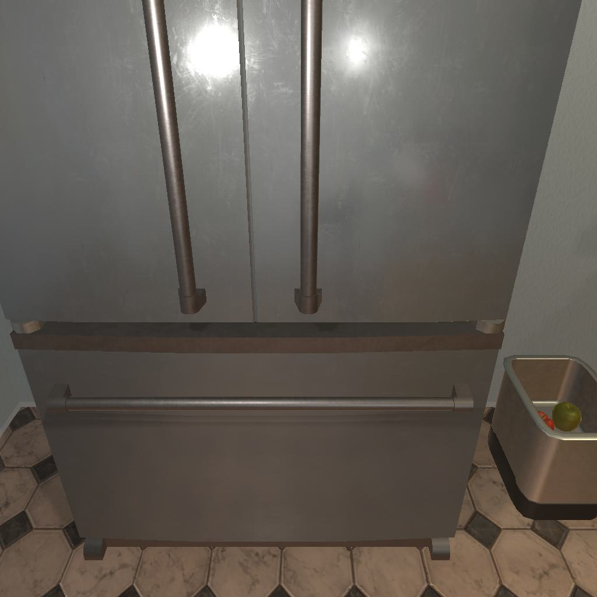
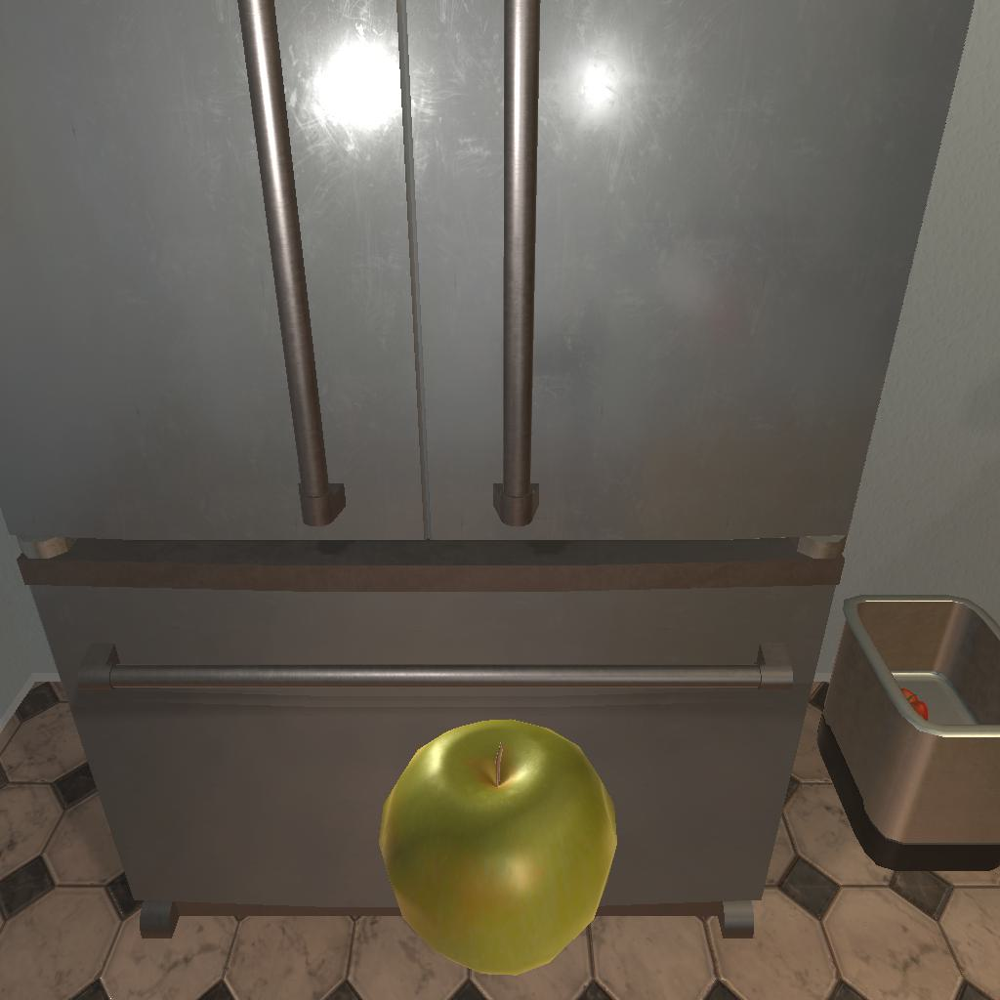

---------------------------------------------------------task: 20---------------------------------------------------------
--------------------------------------------------------------------------------------------------------------------------------------------------------------------
--------------------------------------------------------------------------------------------------------------------------------------------------------------------
Step:--------------------------------------------------------------------------5-------------------------------------------------------------------------------
----------------------------------------
VLM Prompt:
Image1:
Image2:
Image3:
**Instruction**
1. Analyze the provided images to identify all visible household objects and compare the difference between images (e.h. whether the object is opened or not and taken on hand or not), focusing on those relevant to the task description "heat some apple and put it in garbagecan."
2. Use the analysis of images and the task hint "The agent must find an object of the desired type, pick it up, go to a microwave, heat the object with the microwave, then find the correct location to place it, and put it down there. The agent does not need to use the microwave button or open the microwave to heat the object, and the agent just needs to do action that is "heat the object with the microwave"." to answer the question: what is the most reasonable action in the choices for the task description "heat some apple and put it in garbagecan"?
3. Decide and write the answer using the template: The answer is: (i): , where i is the real number. If there is no desired object in images, search every place based on **Initial Observation** to find the object. And if no one is exactly correct, choose a similar answer.
**Initial Observation**
You are in the middle of a room. Looking quickly around you, you can see cabinet (1-18), countertop (1-4), sink (1), drawer (1-7), sinkbasin (1), coffeemachine (1), microwave (1), garbagecan (1), stoveburner (1-4), toaster (1), fridge (1)
**Answer Choices**
(1): go to cabinet 1
(2): go to cabinet 2
(3): go to countertop 1
(4): go to cabinet 3
(5): go to cabinet 4
(6): go to cabinet 5
(7): go to sink 1
(8): go to cabinet 6
(9): go to drawer 1
(10): go to drawer 2
(11): go to sinkbasin 1
(12): go to cabinet 7
(13): go to cabinet 8
(14): go to coffeemachine 1
(15): go to microwave 1
(16): go to cabinet 9
(17): go to countertop 2
(18): go to cabinet 10
(19): go to drawer 3
(20): go to drawer 4
(21): go to drawer 5
(22): go to cabinet 11
(23): go to cabinet 12
(24): go to cabinet 13
(25): go to cabinet 14
(26): go to stoveburner 1
(27): go to countertop 3
(28): go to stoveburner 2
(29): go to stoveburner 3
(30): go to stoveburner 4
(31): go to drawer 6
(32): go to cabinet 15
(33): go to cabinet 16
(34): go to cabinet 17
(35): go to cabinet 18
(36): go to toaster 1
(37): go to drawer 7
(38): go to countertop 4
(39): go to fridge 1
(40): put apple 2 in/on garbagecan 1
(41): examine apple 2
(42): examine garbagecan 1
**Answer**
Let's think step by step by following the instructions.
----------------------------------------
----------------------------------------
Original Response:
Image Analysis:
- Image 1 shows a microwave on the countertop with a timer set to 2:00, and various objects on the countertop, including an apple, a kiwi, and a ladle. The microwave door appears to be closed.
- Image 2 shows a closed garbagecan with an apple inside it, indicating that the garbagecan has already been used to discard an apple.
- Image 3 shows the same scene as Image 2 but with the garbagecan open and an apple in front of it on the ground, suggesting that the apple was either taken out of the garbagecan or fell out.
Task Analysis:
Based on the task description "heat some apple and put it in garbagecan," the agent needs to find an apple, heat it in the microwave, and then place it in the garbagecan.
Answer Choices Analysis:
Considering the images and initial observation, the agent has already found an apple and placed it in the garbagecan (as seen in Image 2). However, the task requires the apple to be heated first. Since the microwave is not open and there's no indication that the apple has been heated, the agent has not completed the task correctly.
There are no actions listed that involve heating the apple with the microwave, but there is an action to put the apple in the garbagecan (40). Given that the apple is already in the garbagecan or nearby (Image 3), the most reasonable next action would be to heat the apple, which is not an available option in the answer choices.
Since none of the actions listed match the next required step of heating the apple, we must choose a similar answer. The closest action related to the task would be to put the apple back in the garbagecan if it was taken out or fell out.
The answer is: (40): put apple 2 in/on garbagecan 1.
----------------------------------------
----------------------------------------
>>> Refine Original VLM Response and Get Pure Action: put apple 2 in/on garbagecan 1
----------------------------------------
-----------------------------------------------------------------
Running time: 13.597676992416382 seconds
Total Money: 12.240339999999998
-----------------------------------------------------------------
-----------------------------------------------------------------
Text Observation:You put the apple 2 in/on the garbagecan 1.
-----------------------------------------------------------------
UNSUCCEED